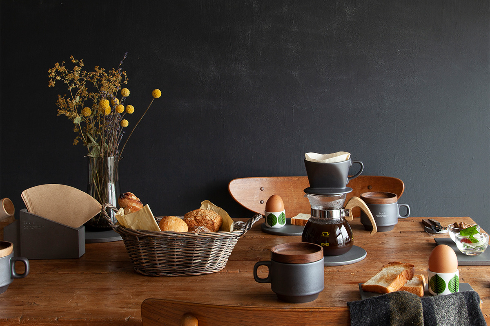
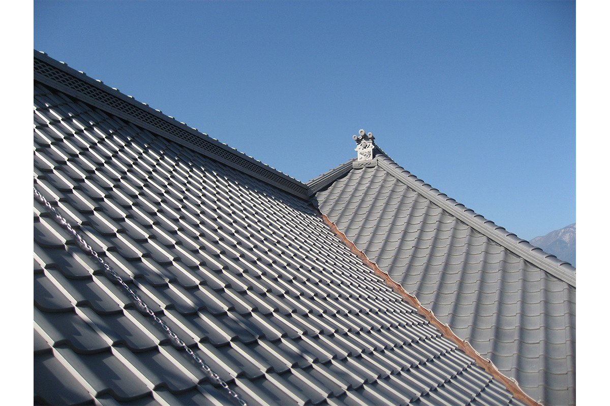
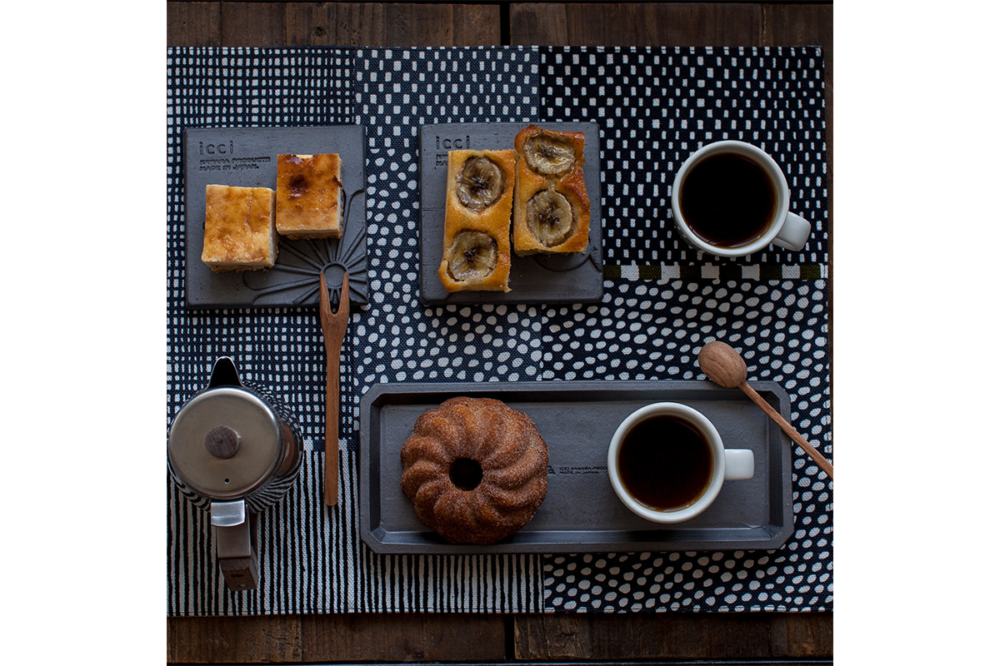
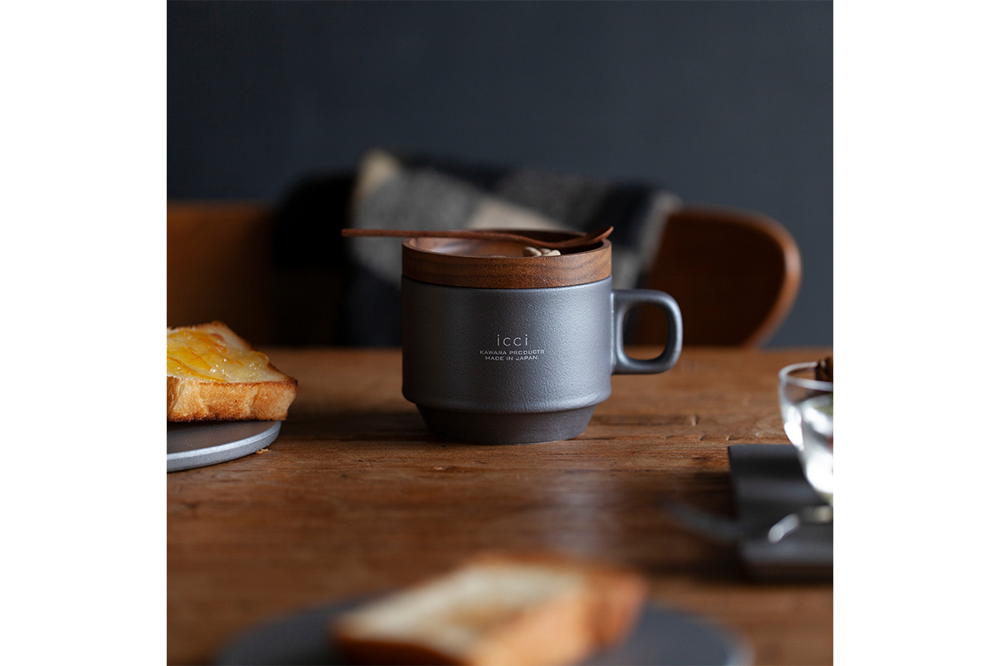
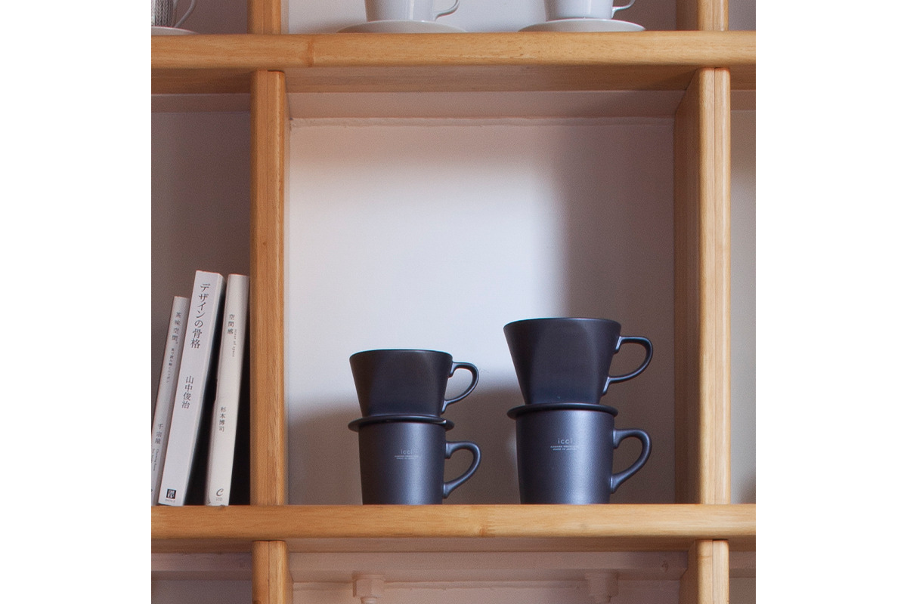
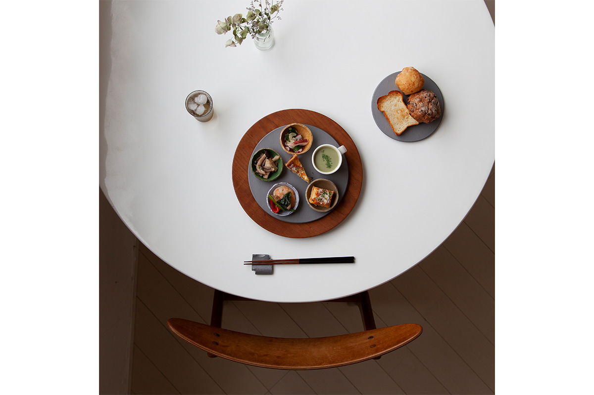
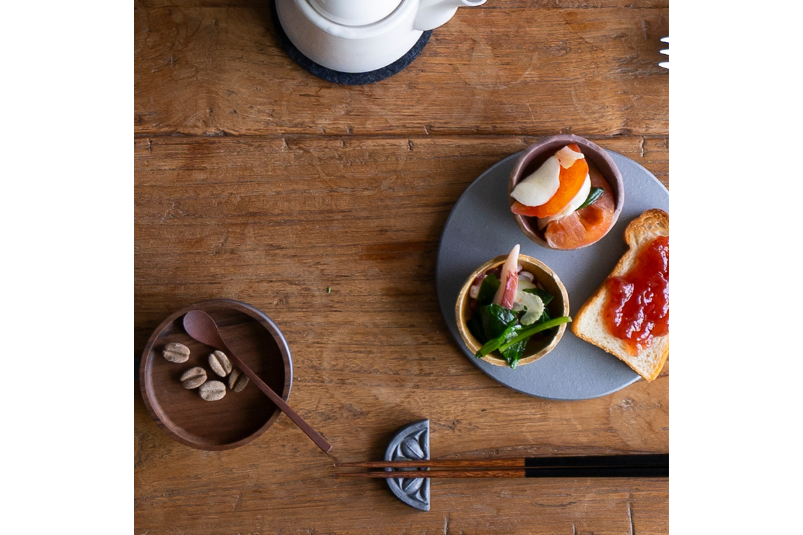
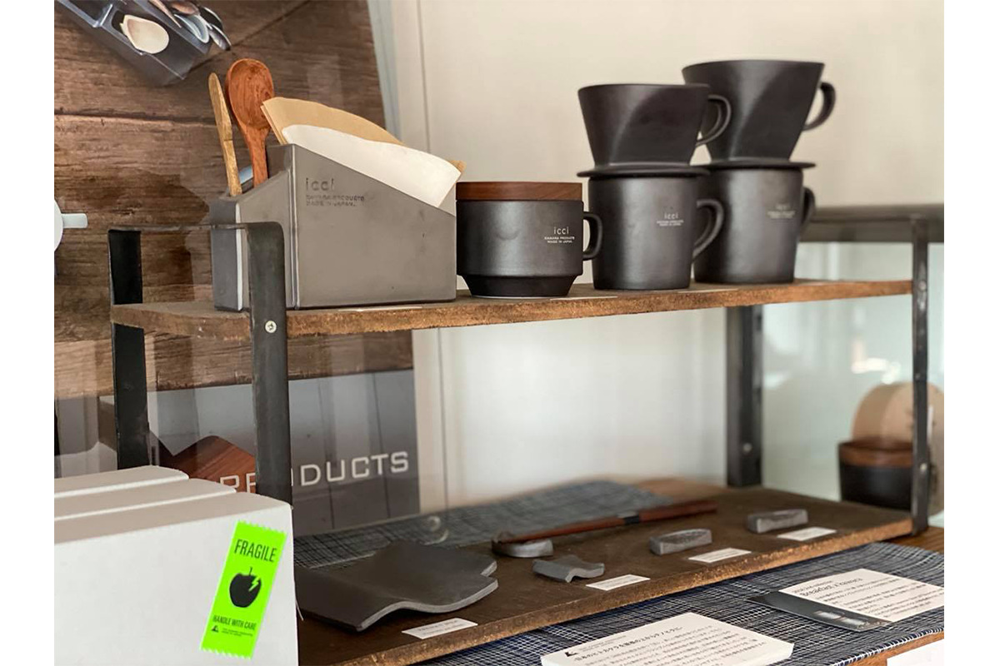
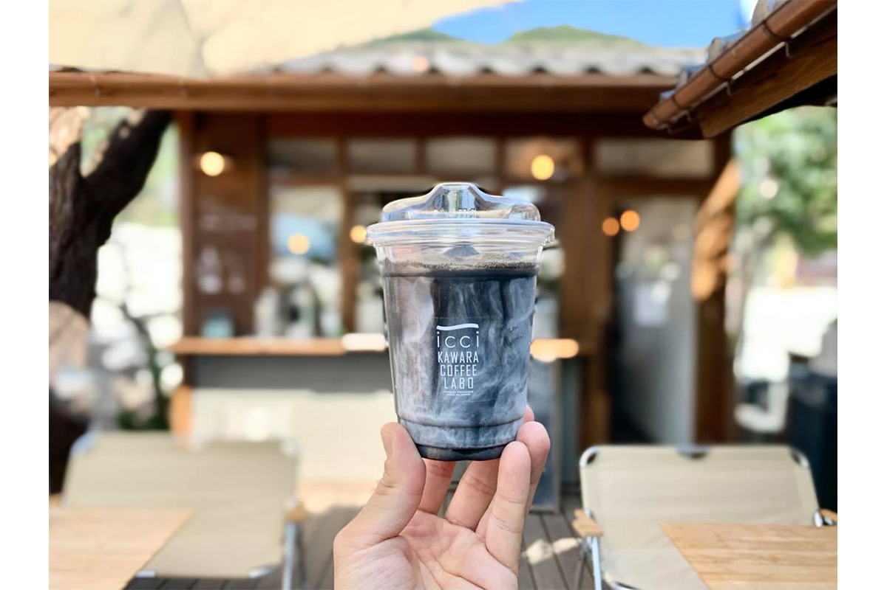
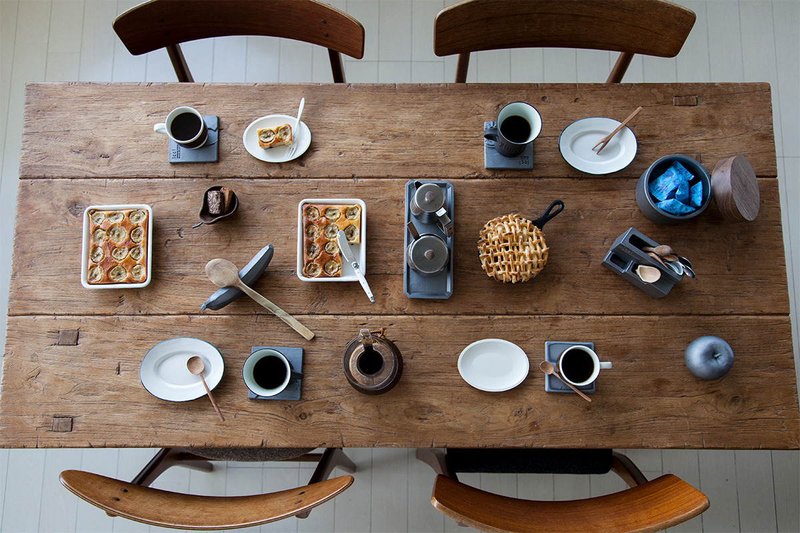

Префектура Яманаси · Фуэфуки · ремесло
icci KAWARA PRODUCTS: черепица с крыши переезжает на кухонный стол

В Фуэфуки, в префектуре Яманаси, больше ста лет обжигают черепицу для крыш. Наследник семейной мастерской решил, что её серебристый блеск заслуживает места не только наверху, и превратил черепицу в посуду.
Мастер
Кровельщик, который поехал учиться в Италию
Ясухиро Итиносэ родился в префектуре Яманаси в 1976 году. В 22 года он пришёл в семейную фирму «Итиносэ кавара коге», которая делает черепицу с 1916 года, и стал кровельщиком, мастером укладки черепицы.
Ремесло он осваивал на крышах, а новые идеи искал за границей. В 2007 году он ненадолго уехал учиться в Италию, через год в Австралию. В 2015 году участвовал как кровельщик в проекте японских ворот для чайного сада, который вёл Йельский университет, а в 2017 году в другом проекте в Калифорнии.
В 2016 году, к столетию фирмы, он выпустил первую коллекцию собственного бренда icci KAWARA PRODUCTS. Девиз бренда звучит так: «Кусочек Японии: с крыши на ладонь». Себя мастер называет «создателем кавара», то есть черепицы.
Материал
Серебро, которое рождается в огне

Искусство делать черепицу пришло в Японию около 1400 лет назад. Глину обжигают при температуре выше 1000 градусов, и в конце обжига поверхность покрывается тонкой плёнкой углерода. Она и даёт черепице тот самый благородный серебристо-серый цвет, который называют «ибуси-гин», «копчёное серебро». Ценят черепицу не только за форму, но и за этот оттенок.
Мастер хотел, чтобы этот цвет видело как можно больше людей, и не только на крышах. Так появилась идея соединить навыки ремесленников с работой дизайнеров.
Бренд
Черепица для молодых
Через черепицу бренд хочет рассказать о японском ремесле как можно большему числу японцев, особенно молодым. Поэтому арт-директором пригласили человека из мира моды: медиакреатора, известного графикой для бренда A BATHING APE.

Вещи icci простые и строгие на вид, а серебристо-серый цвет черепицы хорошо смотрится в светлом современном интерьере. Вот несколько из них.
Вещи
Что делают из черепицы
Кружки, которые ставят друг на друга

Кружки покрыты той же глазурью, что идёт на черепицу, и складываются одна в другую. Крышка из ореха служит подставкой под чашку или блюдцем для печенья. По словам создателей, у глазури мягкий край, и кофе из такой кружки кажется вкуснее. В 2021 году кружка с крышкой стоила 2970 иен с налогом.
Воронки для кофе

Набор состоит из воронки и кружки и бывает двух размеров. У воронки три отверстия, кофе проходит через неё медленно и получается в меру плотным. Чем дольше пользуешься черепичной посудой, тем глубже становится её цвет. В 2021 году набор M стоил 3850 иен, набор L 4950 иен, оба с налогом.
Тарелки и подносы

Тарелки делают из того же материала и тем же способом, что и кровельную черепицу «ибуси-гин». На них можно подавать еду, а можно класть мелочи на кухне или в ванной. В 2021 году тарелка M стоила 3850 иен, L 4950 иен, обе с налогом.
Подставки для палочек

Узоры для подставок взяты с древней черепицы: это узор эпохи Асука и цветок лотоса. В 2021 году подставка стоила 880 иен с налогом.
Кафе
Кофе в черепичной кружке
Бренд открыл в Фуэфуки собственную кофейню icci KAWARA COFFEE LABO. Напитки и тосты здесь подают в черепичных кружках и на черепичных тарелках, так что вещи icci можно потрогать и попробовать в деле, прежде чем покупать. При кафе работает магазин бренда.



Черепица остаётся черепицей: тот же материал, тот же обжиг, тот же цвет. Меняется только форма, и с крыши она переходит прямо в руки.
icci KAWARA COFFEE LABO
- Адрес
- префектура Яманаси, Фуэфуки, Исава-тё Мацумото, 829-4
- Часы работы
- 10:00–18:00
- Выходные
- четверг
icci KAWARA PRODUCTS